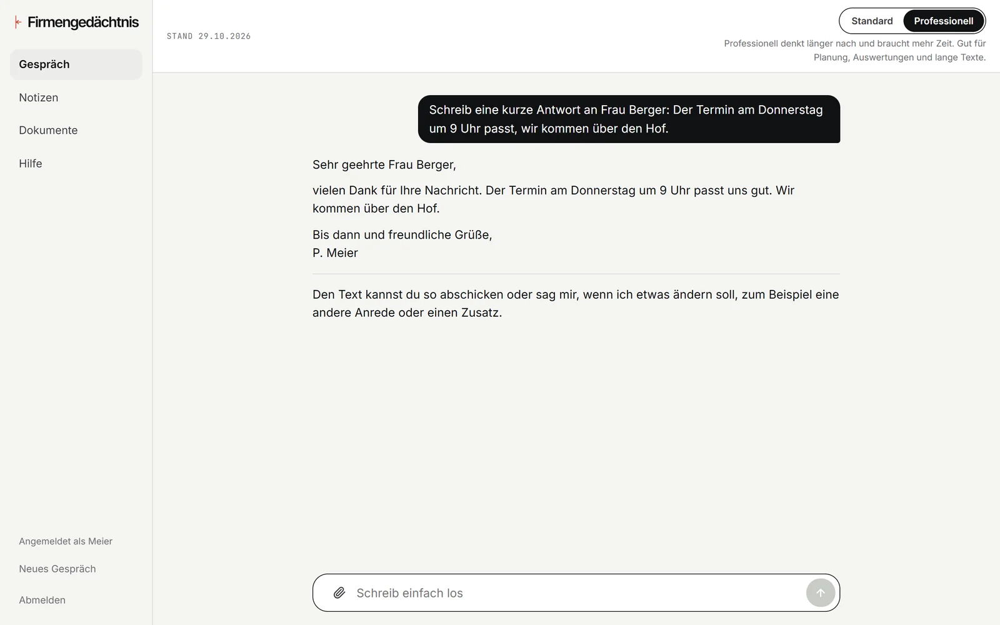

So sieht es aus
Fragen in ganzen Sätzen. Antwort mit Quelle.
Eine Arbeitsfläche im Browser, am Rechner und am Handy. Oben wählen Sie, wie gründlich gearbeitet wird: Standard für Mails und Fragen zwischendurch, Professionell für Planung, Auswertungen und lange Texte.
Firmengedächtnis · Professionell

Erfundener Betrieb, echte Antwort.

Am Handy, dasselbe Gespräch.